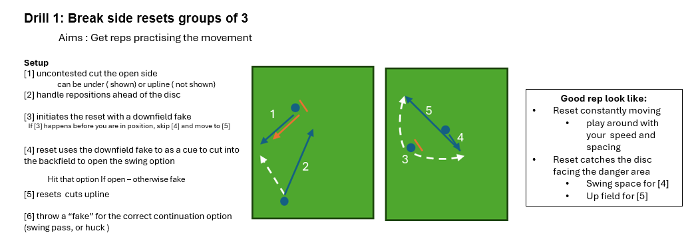
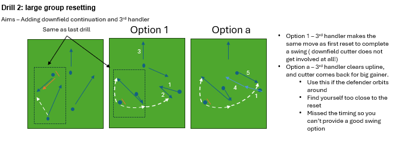
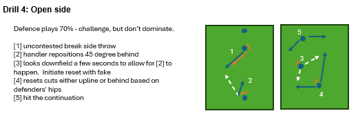

- Generating flow from resets
- Horizontal endzone practise
- Maintaining flow from continuation
Session Start
Chat and warm up
Throwing Warm Up — 4 Lines Break Force
▶ View Drill on Ultiplays- Work on hitting slash cuts with an inside break (inside force)
- Work on hitting arounds (reset-like cuts) — flat force, but give the around throw
Resetting
Mindset shift: instead of resetting the stall, we are resetting the momentum.
- Look reset early — gives handlers confidence to clear through instead of clogging
- Be in motion — harder for the defence to control and reduces miscommunication turnovers
- 1st option: look to be aggressive — cut upline
- In the handler space: keep the disc moving by hitting the continuation option
Breakside Resetting
- Drill 1 — Groups of 3 going through the motions, 10 reps each
- Drill 2 — Bring it back together, add a 3rd handler and downfield continuation. Introduce option for 3rd handler to clear through creating a big swing
Open Side Resetting
- Drill 3 — Start off 50 off-hand throws each (avoid throwing flicks)
- Drill 4 — Open side resets, groups of 6
Endzone

- Side stack players stay disciplined and don't drift out to help
- Once we have started a swing, finish it
- ISO player — don't cut open as you clog the space for reset to cut upline
5 Pull — Static Start
Defence ramp it up slowly from 75% to 100% for the final rep
5 Pull — From Flow
Best of 5 — Penalty Shoot Style
Revolver Mini
Move less but move with purpose
7s Full Pitch
Drills Explained


Film Example

Option A — Watch #98 in the middle. Normally would come back to complete the swing, but being marked out — holds back and allows a downfield cutter to come in.
Glasgow Ultimate (GBR) vs 4hands (POL) | Mixed | 2025 EUCF
Inside Joel's Mind
You don't need to read this… (though point 7 is quite good)
▾
Inside Joel's Mind
You don't need to read this… (though point 7 is quite good)Introduction
A bit more insight into the thinking behind what I do on the pitch — particularly around handling and resetting. A lot of this doesn't come up in training because we're focused on drills, but I think the 'why' behind decisions matters.
1. Resetting the Stall vs. Resetting the Momentum
I was brought up thinking the reset was about getting the stall count back to zero. Looking back, I think that framing is a bit of a trap — it gives you licence to stare downfield for ages, because in the back of your mind the reset is just a safety net.
For me now, the reset is about generating momentum — keeping the disc moving, changing the angle of attack, making the defence react rather than letting them dictate.
- I want to get the disc moving quickly, even off a dead disc or a brick pull
- From a dead disc, I give my cutters one move to get open. If it's not there, I'm already looking reset
- I want that first reset cut to be aggressive and ideally upline, not just a passive backwards dump to safety
2. How I Think About a Dead Disc
When I pick up a dead disc — off a stoppage, a time out, a brick — my mindset is that the defence is at its absolute strongest right now. They've had time to set up exactly how they want.
So I give my cutters one move, and if they're not open, I'm moving the disc to start generating flow. From a dead disc the defence is at its strongest; we need to move the disc to make them adjust. Once they're adjusting they're no longer dictating — they're reacting.
3. Why I Usually Prefer the Swing Over the Upline
Generally speaking, when I'm looking to reset, I'd rather find the swing than the upline. A swing changes the angle of attack — it makes the defence shift and react. An upline keeps the attack going in the same direction, which gives them less to deal with.
That said, if the upline is genuinely clean and open, I'm taking it. But if it's a bit tight, or the cutter's going to receive in an awkward position, I'll hold off and keep looking for the swing.
One thing I feel strongly about: if the upline is taken, the receiver needs to catch and accelerate straight into a power position. An upline that leads to a static catch hasn't really achieved much.
4. How Force Changes What I'm Looking For
When I'm Being Forced Backhand
The backhand is much easier for me to control over short distances and tight windows. When I'm forced backhand I feel like I've got a lot of options — comfortable hitting a tight upline cut, and I like the big flick fake followed by a quick half-pivot around shot.
When I'm Being Forced Flick
The flick is a different story. I'm much more comfortable throwing longer flicks with a bit of roll curve on them than trying to fit a tight five-yard flick in flow. So when I'm forced flick, I'm looking for reset cuts that give me more room — bigger, wider cuts where I can throw a longer controlled flick with some shape on it.
These are my own strengths and weaknesses — yours might look quite different. The point is to think honestly about what you can actually throw well, and match the reset cut to that.
5. The Open-Side 45 — My Favourite Position on the Pitch
Setting up 45 degrees behind the disc on the open side is probably my favourite place to be on the whole pitch. I know I'm about to be on the ball, the handler is going to look at me, and I've got two really high-value options: power position for a big gain downfield, or a breakside continuation off a shoulder-drop fake.
The biggest thing: I never want to receive a static pass at 45 degrees. If I'm just standing there and the disc comes to me, the defence has won that exchange. If my defender has poached into the lane and left me open, that's not a signal to stay put — it's a signal to move towards the breakside. That moves the disc away from where the defence wants it and forces them to react.